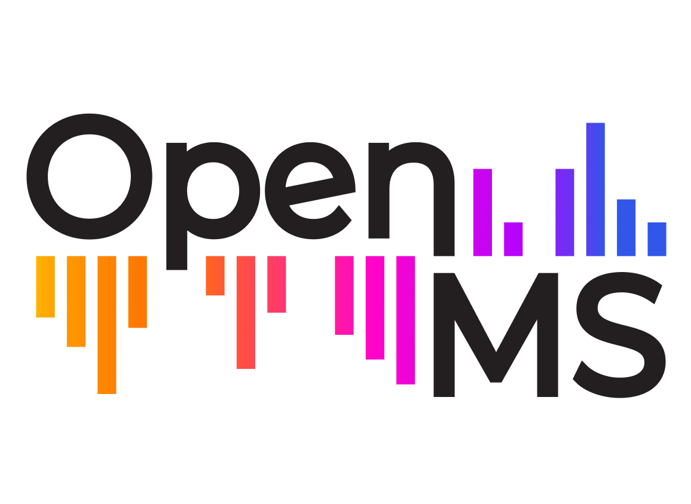
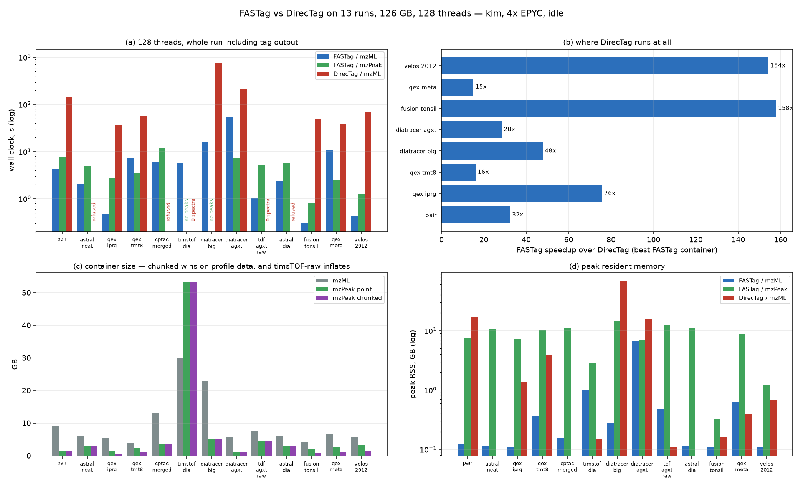

Partial sequence tags from peptide MS/MS spectra, and a filter that keeps only the spectra whose tags occur in sequences you supply.

FASTag is an OpenMS TOPP tool. It reads mzML and mzPeak, writes tab-separated tags, and drops into an OpenMS pipeline like any other TOPP tool.
A sequence tag is a short peptide read inferred directly from a fragment-ion ladder — no database search, no precursor digest. FASTag is a fast, sensitive prefilter: it tells you what is worth looking at before you commit to a slow method.
-fasta.The algorithm is a reimplementation of DirecTag (Tabb et al., J. Proteome Res. 2008, 7:3838). That paper is the citation — FASTag has no separate publication.
Measured against DirecTag 1.4.21142 on a 13-run, 126 GB corpus at 128 threads — Q Exactive, Orbitrap Fusion, LTQ Velos, Orbitrap Astral, timsTOF diaPASEF and diaTracer pseudo-MS2 up to 3.09 M spectra:
| FASTag | DirecTag | |
|---|---|---|
| Total wall clock, 8 comparable files | 92.3 s | 1,344.6 s |
| Peak memory, 9.07 GB input | 126 MB | 17.7 GB |
| Valid tag ranked first (PXD000001) | 90.91% | 88.69% |
| Valid tag within top 50 | 98.62% | 98.62% |
| Files read of 13 | 13 | 8 |
14.6x faster across the files DirecTag can read, and 38.8x choosing the better container per file. Memory is flat in the file size rather than proportional to it, so a run is bounded by threads, not by input. Both tools reach the same accuracy ceiling — 98.62% of identified spectra get a valid tag — and FASTag gets there sooner in the ranking.

Binaries are self-contained — the tool, its libraries and the OpenMS data it needs. macOS builds are signed with a Developer ID certificate and notarized by Apple.
| Platform | Command line | Desktop app |
|---|---|---|
| macOS, Apple silicon | FASTag-macos-arm64.tar.gz | .dmg |
| macOS, Intel | FASTag-macos-x64.tar.gz | .dmg |
| Linux x86-64 | FASTag-linux-x64.tar.gz | — |
| Linux arm64 | FASTag-linux-arm64.tar.gz | — |
| Windows x64 | FASTag-windows-x64.zip | — |
Species detection additionally needs the taxonomy index, FASTag-taxonomy-k7.tar.gz, which is already embedded in the release tarballs above. Windows binaries are not yet Authenticode-signed, so SmartScreen will warn on first run. All releases: github.com/okohlbacher/FASTag/releases.
# tags for every MS2 spectrum in a run
FASTag -in run.mzML -out tags.tsv
# high-resolution data, seed length 3 extended to at most 15 residues
FASTag -in run.mzML -out tags.tsv -tag_length 3 -extension 6
# ion-trap MS2 — set the tolerance to match the analyser
FASTag -in run.mzML -out tags.tsv -fragment_tolerance 0.3 -fragment_tolerance_unit Da
# keep only tags occurring in a protein of interest, and the spectra carrying them
FASTag -in run.mzML -out tags.tsv -fasta AGXT.fasta -out_spectra hits.mzML
# mzPeak in, mzPeak out — any combination of mzML and mzpeak works
FASTag -in run.mzpeak -out tags.tsv -out_spectra hits.mzpeakIsotope collapsing and one gap per tag are on by default. For the fastest possible run, or to
match a tool with no equivalent of either, add -no_deisotope -gaps 0.
FASTag reads and writes mzPeak, the Parquet-backed mass-spectrometry container. Tagging is unaffected by which you use: reading a run as mzPeak gives the same spectra as reading it as mzML, and a run written to mzPeak and tagged again reproduces the original tag set exactly.
Support comes from mzpeak-openms, bundled with every released binary.
For the algorithm:
Tabb DL, Ma ZQ, Martin DB, Ham AJ, Chambers MC. DirecTag: accurate sequence tags from peptide MS/MS through statistical scoring. J Proteome Res 2008; 7(9): 3838–46. doi:10.1021/pr800154p
For the framework:
Pfeuffer J, Bielow C, Wein S, et al. OpenMS 3 enables reproducible analysis of large-scale mass spectrometry data. Nat Methods 2024. doi:10.1038/s41592-024-02197-7